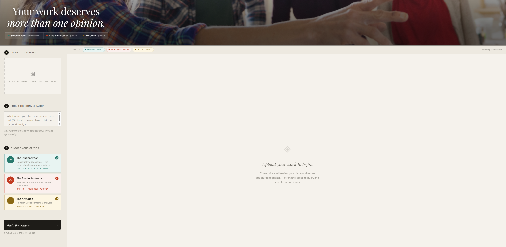

A multi-agent AI system designed to address a fundamental gap in creative education: students rarely get enough practice presenting to a jury of people who disagree on what matters.

The design critique is one of the most formative moments in a student's education — and one of the most underpracticed. Students spend weeks on a project and then present it, cold, to a panel of reviewers with different standards, different reference points, and different levels of patience. Most students experience this format fewer than a dozen times before they graduate.
The consequence isn't just anxiety. It's a skill gap. Presenting and defending creative work under pressure is a learned capability — the ability to hear contradictory feedback simultaneously, hold your position on intentional decisions while remaining genuinely open on weaker ones, and articulate the rationale behind your choices in real time. None of those skills develop without practice. And practice requires repetition in conditions that approximate the real thing.
A single professor's critique — even a rigorous one — can't close that gap. It represents one perspective, one set of standards, one voice. Real juries don't agree. The Critique Council was built to close that gap by making it possible for a student to stand in front of three simultaneous, differentiated critical perspectives on demand — before the stakes are real.
The multi-agent design isn't a technical flourish. It's a pedagogy decision.
The system accepts a student's artwork as a multimodal image input alongside an optional focus question. Both feed into a shared rubric — a dynamic JSON schema that instructs each agent to identify critique categories specific to what it actually observes in the artwork, rather than defaulting to generic buckets like "composition" or "color" on every run. An abstract work and a portrait will generate different rubric categories. That specificity is intentional: it teaches students that feedback is always contextual, not universal.
From there, three distinct critic agents process the same input concurrently via asyncio.gather() — keeping total response time tolerable for classroom use regardless of model latency. Each agent returns a structured JSON object: strengths, areas for improvement, prioritized action items, a numeric rating, and a summary. A regex fallback handles cases where the API returns malformed output rather than clean JSON — a failure mode that surfaces in front of students at the worst moments if you don't plan for it.
The output layer then passes each critique through ElevenLabs TTS with a distinct voice profile per critic, extracts the top action items and sends them to Nano Banana 2 for visual before/after example generation, and packages everything into a timestamped exportable report. A response cache layer deduplicates on image hash and prompt to prevent redundant API calls when students iterate.
The most consequential design decision in the system has nothing to do with code. It's the choice to build intentional disagreement into the architecture. A single AI critic would flatten feedback into a consensus that doesn't exist in real professional critique. Three agents with different standards, different tones, and different thresholds for patience train students to navigate something closer to the actual experience.
The model choices in the 2026 stack are deliberate, not arbitrary. Each agent's underlying model was selected to match the cognitive profile its persona requires.
Peer-level feedback. Constructive, accessible, focused on shared learning. GPT-5 mini's speed and conversational fluency make it the right model for the voice students read first. Fast response keeps the experience from feeling mechanical. The encouragement here isn't softness — it's pedagogically accurate: peers give different feedback than authorities, and that difference is the point.
Balanced authority. Concept and technique held in productive tension. Opus 4.5 was chosen specifically for its ability to reason about tradeoffs without hand-holding — which is exactly what a studio professor with decades of experience does. It gives directional guidance, not just observations. The professor voice is the system's anchor: it points toward better work rather than just describing what's wrong.
No filter. Direct. Contextual over encouraging. Gemini 3 Pro's multimodal depth means it reads the image with genuine visual reasoning — making its harsh feedback specific and defensible rather than generically critical. This is the voice that tells a student their work is uninformed of its own historical context. That's a hard thing to hear. It's also the feedback most students never get until it's too late.
ElevenLabs replaces OpenAI TTS-1. Each critic's persona has a distinct vocal character — the student sounds tentative and peer-level, the professor measured and authoritative, the critic blunt and unhesitating. That differentiation matters more than it sounds: students engage with audio critique as coming from people, not a machine. Nano Banana 2 generates visual before/after examples from action items at 4K quality and Flash speed.
The concurrency layer is the technical decision that makes the system usable in a classroom setting. Three frontier models running sequentially would produce wait times that break the experience. asyncio.gather() fires all three agents simultaneously, capping total response time at the slowest individual agent rather than the sum of all three. In practice this means a complete three-voice critique in roughly four to five seconds — tolerable for a student standing at a podium.
The shared rubric is the design decision that makes the feedback educationally coherent across three different models and personas. Rather than each agent developing its own categories independently, all three receive the same JSON schema instruction: identify areas specific to what you actually observe. The rubric doesn't dictate what the feedback will say — it dictates how it will be structured. That structure is what makes the output comparable and exportable.
Most portfolios skip this section. That's a mistake. The lessons section is where a Director-level practitioner separates from a developer showing off a completed project. What follows is what the build actually taught me — not the polished version.
The image generation layer is the most brittle part of the system. The distance between "action item extracted from JSON" and "useful educational image" is longer than it looks. Prompts built from critique text are inherently noisy — the system is asking an image model to interpret a natural language description of a visual problem it has never seen. Nano Banana 2's world knowledge grounding closes this gap significantly compared to DALL-E 3, but prompt engineering the visual feedback layer still required more iteration than any other component. This layer will always need human review before being used in a formal teaching context.
Voice differentiation has more pedagogical impact than I anticipated. The original build used OpenAI's TTS-1 voices — functional but generic. When I tested the ElevenLabs upgrade, the difference in student engagement was immediate. When each critic sounds like a different person, students process the feedback differently. The vocal character of the professor prompt and the vocal character of the industry critic prompt are not the same experience. This is not a cosmetic upgrade — it's the feature that makes the persona architecture feel real rather than mechanical.
JSON parsing failures will surface in front of students if you don't plan for them. The API does not always return clean structured output. Temperature, prompt complexity, and model load all affect whether you get valid JSON or something that needs to be extracted from prose. The regex fallback that extracts action items from unstructured text is not optional — it's the difference between the system failing gracefully and failing visibly at the worst possible moment. Always build the fallback before you need it.
The SSL certificate workaround is a deployment detail that matters. The original build required a manual SSL context override to handle certificate verification on certain systems. It's a small thing that becomes a large thing when a student is trying to run the tool on a school laptop five minutes before a review. Environment-specific failure modes are invisible until they're not. Test on the actual hardware the end users will run it on.
This system simulates critique. It cannot replace it. The live negotiation of a real jury — the follow-up question, the silence after a weak answer, the moment a reviewer asks you to defend a specific decision you hadn't prepared for — is beyond what any AI panel can replicate today. The Critique Council is a rehearsal tool, not a substitute. That ceiling is a feature, not a failure. Being precise about what AI can and cannot do is not a limitation of ambition. It's a design principle.
Validated in practice: Three agents delivering differentiated feedback creates productive dissonance. Students report feeling more prepared for formal critiques after using the system. Voice differentiation (ElevenLabs) matters — when each critic sounds like a different person, the persona architecture feels real rather than mechanical. Multi-agent concurrency works: asyncio.gather() keeps response times reasonable even with three models running simultaneously.
From educators & professors: Pratt faculty see potential for curriculum integration — particularly in courses where students give public presentations. The system could extend studio critique practice beyond the 1–2 formal critiques that most students experience per semester. This is institutional validation that the pedagogical gap is real.
Professional application (exploratory): Solo practitioners and small creative teams have independently expressed interest in using a variant for pre-client stress-testing and feedback before final presentation. This gap (feedback beyond clients who have an agenda) is real but not the primary focus of this thesis. A separate brief documents how the core system could be adapted for professional contexts — that exploration is ongoing.
Still open: Longitudinal impact on student confidence and presentation skill development. Institutional integration patterns at different school types. Generalization beyond visual design critique to other creative disciplines (writing, music, performance).
Next direction: Deeper integration at Pratt — pilot in specific courses with structured tracking of student outcomes. Professional variant exploration — how the architecture scales for team feedback in agency/studio settings.
Tracking what's changed — and why the choices matter — is what a Director of Creative Technology is paid to do.
The original Critique Council was built on the best available models in early 2024. The concept has held. The stack has been superseded. A rebuilt version in 2026 routes the student agent through GPT-5 mini for its speed and conversational accessibility, assigns the professor role to Claude Opus 4.5 for its depth of reasoning and tolerance for ambiguity, gives the industry critic to Gemini 3 Pro for its multimodal visual analysis capability, replaces DALL-E 3 with Nano Banana 2 for faster and higher-fidelity educational imagery, and upgrades the voice layer from OpenAI TTS-1 to ElevenLabs for persona-specific emotional range.
The architecture hasn't changed. The concurrency model is the same. The shared rubric logic is the same. The export and cache layers are the same. What's changed is that each component is now running on a model that is meaningfully more capable at its specific task than what it replaced. That's the upgrade that matters — not a rewrite, but a re-evaluation of the best available tool for each job in the system.
This is what ongoing stewardship of an AI system looks like at the director level: not rebuilding every time the frontier moves, but maintaining enough awareness of the field to know when a component swap will meaningfully improve the educational experience — and being able to articulate exactly why.
The Critique Council is a case study in what it means to apply AI to a genuinely hard pedagogical problem rather than a convenient one. The easy version of this project is an AI that generates encouraging feedback on student work. That tool already exists. What's harder — and what this system attempts — is using AI to create the conditions for a specific kind of learning that is difficult to provide at scale in a traditional studio environment.
Design education has a resource problem: the high-quality, differentiated feedback that helps students grow most is also the most expensive kind to produce. A professor can give one student a rigorous, perspective-rich critique or ten students a brief one. The Critique Council doesn't replace the professor. It gives the student ten more rehearsals before the professor critique happens — so that when it does, the student arrives prepared to actually receive and use what they hear.
That framing — AI as infrastructure for learning rather than a substitute for teaching — is the design philosophy this lab is built on. Human in the loop, always. The tool creates the conditions. The professor, the student, and the jury do the rest.
Exploring AI infrastructure for creative learning. Open to conversations about workshops, collaborations, research partnerships, or consulting on educational technology systems. Try the live demo or read the source.
Docs, the working prototype, and the Python reference implementation are on GitHub.